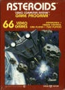
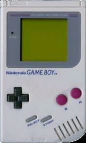

Un videojuego es una aplicación interactiva orientada al entretenimiento que a través de ciertos mandos o controles permite simular experiencias en la pantalla de un televisor, un ordenador u otro dispositivo electrónico.
Cuando te dispones a distraerte con una consola o desde algún dispositivo estas trabajando en el desarrollo de las siguientes habilidades:
Los jugadores de títulos de acción en primera persona toman decisiones precisas con mayor rapidez, en concreto hasta un 25% más rápido que aquellos que no disfrutan de este tipo de juegos.
Los juegos de conducción mejoran la memoria, la concentración y la capacidad de hacer varias cosas a la vez de los adultos de mayor edad.
Los juegos de realidad virtual pueden ayudar a los pacientes con quemaduras a olvidar temporalmente sus dolores.
Mejoran la capacidad visual, especialmente en jugadores de títulos de acción en primera persona, de forma que perciben mejor los detalles y contrastes.
Mejoran la capacidad motora de los niños de preescolar, ya que ayudan a impulsar aspectos como la coordinación ojo-mano.
En definitiva los videojuegos tienen un gran potencial que todavía hoy sigue sin explotar y son algo más que un simple entretenimiento.
Generos de videojuegos
| Categorias |
Descripcion |
Ejemplos de videojuegos |
| Acción |
Basados en ejercicios de repetición (por ejemplo, pulsar un botón para que el personaje ejecute una acción). |
Wolfenstein 3D, DOOM, Quake, System Shock II, Half Life 2, etc. |
| Arcade |
El usuario debe superar pantallas para seguir jugando. Imponen un ritmo rápido y requieren tiempos de reacción mínimos. |
Ghost´n Goblins, Black Tiger, Final Fight, Street Fighter II, The King of Dragons, Three Wonders, etc. |
| Deportivo |
Fútbol, tenis, baloncesto y conducción. Recrean diversos deportes. Requieren habilidad, rapidez y precisión. |
Bústbol (fútbol), Pase 10 (Básquet), Red ciega (vóley), Bowckey (hockey), etc. |
| Estrategia |
Consisten en trazar una estrategia para superar al contrincante. Exigen concentración, saber administrar recursos, pensar y definir estrategias. |
Risk, Calabozos y Dragones, Ajedrez, Domino. etc. |
| Simulacion |
aviones, simuladores de una situación o instrumentales… Permiten experimentar e investigar el funcionamiento de máquinas, fenómenos, situaciones y asumir el mando. |
Gta, videojuegos sobre manejar aviones o autos, etc. |
| Juegos de mesa |
habilidad, preguntas y respuestas…La tecnología informática que sustituye al material tradicional del juego y hasta al adversario |
Naipes o cartas, Monopoly, Dominó, Rompecabezas, etc. |
| Juegos musicales |
juegos que inducen a la interacción del jugador con la música y cuyo objetivo es seguir los patrones de una canción. |
Dance Dance Revolution, Pump it Up, SingStar, Guitar Hero, etc. |
Los inicios
En 1958 William Higginbotham creó, sirviéndose de un programa para el cálculo de trayectorias y un osciloscopio, Tennis for Two (tenis para dos): un simulador de tenis de mesa para entretenimiento de los visitantes de la exposición Brookhaven National Laboratory.
Este videojuego fue el primero en permitir el juego entre dos jugadores humanos. Cuatro años más tarde Steve Russell, un estudiante del Instituto de Tecnología de Massachussets, dedicó seis meses a crear un juego para computadora usando gráficos vectoriales: Spacewar.
En este juego, dos jugadores controlaban la dirección y la velocidad de dos naves espaciales que luchaban entre ellas. El videojuego funcionaba sobre un PDP-1 y fue el primero en tener un cierto éxito, aunque apenas fue conocido fuera del ámbito universitario.
En 1966 Ralph Baer empezó a desarrollar junto a Albert Maricon y Ted Dabney, un proyecto de videojuego llamado Fox and Hounds dando inicio al videojuego doméstico. Este proyecto evolucionaría hasta convertirse en la Magnavox Odyssey, el primer sistema doméstico de videojuegos lanzado en 1972 que se conectaba a la televisión y que permitía jugar a varios juegos pregrabados.

1970-1979: La eclosión de los videojuegos
Un hito importante en el inicio de los videojuegos tuvo lugar en 1971 cuando Nolan Bushnell comenzó a comercializar Computer Space, una versión de Space War, aunque otra versión recreativa de Space War como fue Galaxy War puede que se le adelantara a principios de los 70 en el campus de la universidad de Standford.
La ascensión de los videojuegos llegó con la máquina recreativa Pong que es considerada la versión comercial del juego Tennis for Two de Higginbotham. El sistema fue diseñado por Al Alcom para Nolan Bushnell en la recién fundada Atari.
El juego se presentó en 1972 y fue la piedra angular del videojuego como industria. Durante los años siguientes se implantaron numerosos avances técnicos en los videojuegos (destacando los microprocesadores y los chips de memoria). Aparecieron en los salones recreativos juegos como Space Invaders (Taito) o Asteroids (Atari).

1980-1989: La década de los 8 bits

Los años 80 comenzaron con un fuerte crecimiento en el sector del videojuego alentado por la popularidad de los salones de máquinas recreativas y de las primeras videoconsolas aparecidas durante la década de los 70.
Durante estos años destacan sistemas como Oddyssey 2 (Phillips), Intellivision (Mattel), Colecovision (Coleco), Atari 5200, Commodore 64, Turbografx (NEC). Por otro lado en las máquinas recreativas triunfaron juegos como el famoso Pacman (Namco), Battle Zone (Atari), Pole Position (Namco), Tron (Midway) o Zaxxon (Sega).
El negocio asociado a esta nueva industria alcanzó grandes cosas en estos primeros años de los 80, pero sin embargo, en 1983 comenzó la llamada crisis del videojuego, afectando principalmente a Estados Unidos y Canadá, y que no llegaría a su fin hasta 1985.

Japón apostó por el mundo de las consolas con el éxito de la Famicom (llamada en occidente como Nintendo Entertainment System), lanzada por Nintendo en 1983 mientras en Europa se decantaba por los microordenadores como el Commodore 64 o el Spectrum.
A la salida de su particular crisis los norteamericanos continuaron la senda abierta por los japoneses y adoptaron la NES como principal sistema de videojuegos. A lo largo de la década fueron apareciendo nuevos sistemas domésticos como la Master System (Sega), el Amiga (Commodore) y el 7800 (Atari) con juegos hoy en día considerados clásicos como el Tetris.
A finales de los 80 comenzaron a aparecer las consolas de 16 bits como la Mega Drive de Sega y los microordenadores fueron lentamente sustituidos por las computadoras personales basadas en arquitecturas de IBM.

En 1985 apareció Super Mario Bros, que supuso un punto de inflexión en el desarrollo de los juegos electrónicos, ya que la mayoría de los juegos anteriores sólo contenían unas pocas pantallas que se repetían en un bucle y el objetivo simplemente era hacer una alta puntuación. El juego desarrollado por Nintendo supuso un estallido de creatividad. Por primera vez teníamos un objetivo y un final en un videojuego. En los años posteriores otras compañías emularon su estilo de juego.
En el campo de las recreativas, destacaron videojuegos como Defender, Rally-X, Dig Dug, Bubble Bobble, Gauntlet, Out Run o Shinobi además de producirse un cambio en cuanto a la nacionalidad de los juegos pasando a ser Japón la mayor productora.
Otra rama de los videojuegos que creció con fuerza fue la de los videojuegos portátiles. Estos comenzaron a principios de los 70 con los primeros juegos completamente electrónicos lanzados por Mattel, los cuales difícilmente podían considerarse como videojuegos, y fueron creciendo en popularidad gracias a conversiones de recreativas como las realizadas por Coleco o adictivos microjuegos como las Game & Watch de Nintendo. La evolución definitiva de las portátiles como plataformas de videojuego llegó en 1989 con el lanzamiento de la Game Boy (Nintendo).

1990-1999: La revolución de las 3D
A principios de los años 90 las videoconsolas dieron un importante salto técnico gracias a la competición de la llamada "generación de 16 bits" compuesta por la Mega Drive, la Super Nintendo Entertainmet de Nintendo, la PC Engine de NEC, conocida como Turbografx en occidente y la CPS Changer de (Capcom).
Junto a ellas también apareció la Neo Geo (SNK) una consola que igualaba las prestaciones técnicas de un arcade pero demasiado cara para llegar de forma masiva a los hogares.
Esta generación supuso un importante aumento en la cantidad de jugadores y la introducción de tecnologías como el CD-ROM, una importante evolución dentro de los diferentes géneros de videojuegos, principalmente gracias a las nuevas capacidades técnicas.
Mientras tanto diversas compañías habían comenzado a trabajar en videojuegos con entornos tridimensionales, principalmente en el campo de los PC, obteniendo diferentes resultados desde las “2D y media” de Doom, 3D completas de 4D Boxing a las 3D sobre entornos pre-renderizados de Alone in Dark. Referente a las ya antiguas consolas de 16 bits, su mayor y último logro se produciría por el SNES mediante la tecnología 3-D de pre-renderizados de SGI, siendo su máxima expresión juegos como Donkey Kong Country y Killer Instinct. También surgió el primero juego poligonal en consola, la competencia de la SNES, Mega-Drive, lanzó el Virtual Racing, que tuvo un gran éxito ya que marcó un antes y un después en los juegos 3D en consola.
Rápidamente los videojuegos en 3D fueron ocupando un importante lugar en el mercado, principalmente gracias a la llamada "generación de 32 bits" en las videoconsolas: Sony PlayStation y Sega Saturn (principalmente en Japón); y la “generación de 64 bits” en las videoconsolas: Nintendo 64 y Atari jaguar. En cuanto a los ordenadores, se crearon las aceleradoras 3D.
La consola de Sony apareció tras un proyecto iniciado con Nintendo (denominado SNES PlayStation), que consistía en un periférico para SNES con lector de CD. Al final Nintendo rechazó la propuesta de Sony, puesto que Sega había desarrollado algo parecido sin tener éxito, y Sony lanzó independientemente PlayStation.
Por su parte los arcades comenzaron un lento pero imparable declive según aumentaba el acceso a consolas y ordenadores más potentes.
Por su parte los videojuegos portátiles, producto de las nuevas tecnologías más poderosas, comenzaron su verdadero auge, uniéndose a la Game Boy máquinas como la Game Gear (Sega), Linx (Atari) o la Neo Geo Pocket (SNK), aunque ninguna pudo hacerle frente a la popularidad de la Game Boy, siendo esta y sus descendientes (Game Boy Pocket, Game Boy Color, Game Boy Advance, Game Boy Advance SP) las dominadoras del mercado.
Hacia finales de la década la consola más popular era la PlayStation con juegos como Final Fantasy VII (Square), Resident Evil (Capcom), Winning Eleven 4 (Konami), Gran Turismo (Polyphony Digital) y Metal Gear Solid (konami).
En PC eran muy populares los FPS (juegos de acción en primera persona) como Quake (id Softare), Unreal (Epic Megagames) o Half-Life (Valve), y los RTS (juegos de estrategia en tiempo real) como Command & Conquer (Westwood) o Starcraft (Blizzard). Además, conexiones entre ordenadores mediante internet facilitaron el juego multijugador, convirtiéndolo en la opción predilecta de muchos jugadores, y fueron las responsables del nacimiento de los MMORPG (juegos de rol multijugador online) como Ultima Online (Origin). Finalmente en 1998 apareció en Japón la Dreamcast (Sega) y daría comienzo a la “generación de los 128 bits”.
Desde el 2000: El comienzo del nuevo siglo
En el 2000 Sony lanzó la anticipada PlayStation 2 y Sega lanzó otra consola con las mismas características técnicas de la Dreamcast, nada más que venia con un monitor de 14 pulgadas, un teclado, altavoces y los mismos mandos llamados Dreamcast Drivers 2000 Series CX-1.
Microsoft entra en la industria de las consolas creando la Xbox en 2001.
Nintendo lanzó el sucesor de la Nintendo 64, la Gamecube, y la primera Game Boy completamente nueva desde la creación de la compañía, la Game Boy Advance. Sega viendo que no podría competir, especialmente con una nueva máquina como la de Sony, anunció que ya no produciría hardware, convirtiéndose sólo en desarrolladora de software en 2002.
El ordenador personal PC es la plataforma más cara de juegos pero también la que permite mayor flexibilidad. Esta flexibilidad proviene del hecho de poder añadir al ordenador componentes que se pueden mejorar constantemente, como son tarjetas gráficas o de sonido y accesorios como volantes, pedales y mandos, etc. Además es posible actualizar los juegos con parches oficiales o con nuevos añadidos realizados por la compañía que creó el juego o por otros usuarios.
Inicios de los videojuegos